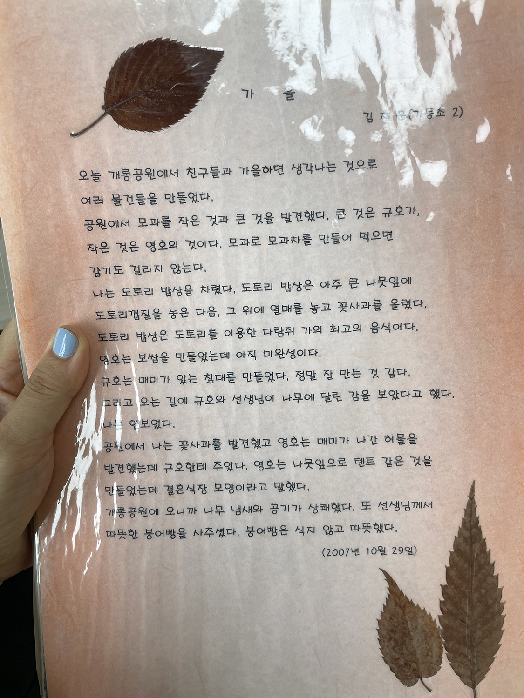

가동초등학교 2학년 김재훈
<
안초롱: 이 작업뿐만 아니라 책장 자체를 보면서 그런 생각도 했어요. 문학을 좋아하고 책을 아주 많이 읽으시는 분이시구나. 초등학교 때부터 글을 되게 잘 쓰셨던데요? 어렸을 때 글 잘 썼다는 얘기 안 들었어요?
재훈: 최근에 초등학교 친구에게 그런 이야기는 들었어요. 어릴 때 친구가 레고 블록으로 공룡을 만든 후 제 앞에서 ‘공룡이다~!’ 이러고 있는데 제가 ‘그거 공룡 아니야, 레고야.’라고 말했다고.
안초롱: 상처를 많이 줬네. 친구들한테. 근데 이 글은 정말 잘 썼어요. 초등학교 2학년 때 쓰신 것 같은데 읽으면서 ‘그 나이에 이렇게 쓸 수 있다고?’ 싶었어요.
재훈: 기억이 안 나는데 혹시 뭐라고 쓰여 있나요?
안초롱:
오늘 개롱공원에서 친구들과 ‘가을’하면 생각나는 것으로 여러 물건을 만들었다.
공원에서 모과를 작은 것과 큰 것을 발견했다. 큰 것은 규호가, 작은 것은 영호의 것이다. 모과로 모과차를 만들어 먹으면 감기도 걸리지 않는다.
나는 도토리 밥상을 차렸다. 도토리 밥상은 아주 큰 나뭇잎에 도토리 껍질을 놓은 다음, 그 위에 열매를 놓고 꽃사과를 올렸다. 도토리 밥상은 도토리를 이용한 다람쥐 가의 최고의 음식이다.
영호는 보쌈을 만들었는데 아직 미완성이다.
규호는 매미가 있는 침대를 만들었다. 정말 잘 만든 것 같다.
그리고 오는 길에 규호와 선생님이 나무에 달린 감을 보았다고 했다. 나는 안 보였다.
공원에서 나는 꽃사과를 발견했고 영호는 매미가 나간 허물을 발견했는데 규호한테 주었다. 영호는 나뭇잎으로 텐트 같은 것을 만들었는데, 결혼식장 모양이라고 말했다.
개롱공원에 오니까 나무 냄새와 공기가 상쾌했다.
또 선생님께서 따뜻한 붕어빵을 사주셨다. 붕어빵은 식지 않고 따뜻했다.

재훈: 제가 쓴 글이라고 도저히 믿을 수 없네요. (웃음)
안초롱: 잘 쓰지 않았어요? 자신이 경험한 상황이 머릿속에 들어오게끔 묘사하면서, 자기가 본 것과 만진 것들을 있는 그대로 솔직하게 썼잖아요. 어떻게 보면 이런 사진들을 찍은 사람과 동일 인물인가 싶을 정도로 순수했는데요. 그런 헷갈리는 포인트가 또 하나 있었어요.
전시가 열린 이 집이 여자 집인지 남자 집인지 잘 모르겠는 거예요. 아까 제가 구석구석 다 열어봤다고 그랬잖아요. 근데 보니까 ‘화장을 안 하는 여자 집이라고 생각할 수도 있겠다.’ 싶었어요. 책장에 대광여고 졸업 앨범이 꽂혀 있던 것도 그렇고, 냉장고에는 닭가슴살이랑 바나나가 있더라고요. ‘식단 조절을 하고 있나 보다.’ 생각했죠.
재훈: 책장 들여다보는 사람은 많은데, 냉장고까지 들여다보고 말해준 사람은 초롱 씨가 처음이에요.
안초롱: 그래요? 집을 공개를 하시니까 볼 수밖에 없지. 심지어 옷장도 꺼내서 볼까 하다가 좀 오바인 것 같다고 생각하긴 했어요. 근데 또 침대 밑 수납함에 여자 옷이랑 가발이 있던데, 작업할 때 쓰신 것 맞죠?
재훈: 그렇죠... (이 사람 정말...)
안초롱: 사진에서 쓰인 가발이랑 비슷해 보이더라고요. 혹시 부끄러우세요?
재훈: ... 네.
안초롱: 뭐 이런 사진을 찍었으면서 부끄러워해요? (웃음)
재훈: 다른 사람 작업 이야기는 신나서 하는데, 제 작업 이야기할 때는 항상 그래요.
안초롱: 엉덩이 다 까놓고 밖에 나가서 사진 찍어놓고서 부끄러워하는 건 진짜 황당하다. 그럴 수 있지, 재밌네요.
<수염 드로잉>
안초롱, 재훈
2024.07.31
<오래된 방은 궁전>
안초롱, 재훈
2024.07.31
<거꾸로 뜨는 눈>과 작가라는 직업
안초롱, 재훈
2024.07.31
<끝없이 걷는 날>과 <무제> 그리고 사진
안초롱, 재훈
2024.07.31
그 소녀
안초롱, 재훈
2024.07.31
크레딧
2024.07.31
<여름의 뒷면>과 <대기 시간>
안초롱, 재훈
2024.07.31